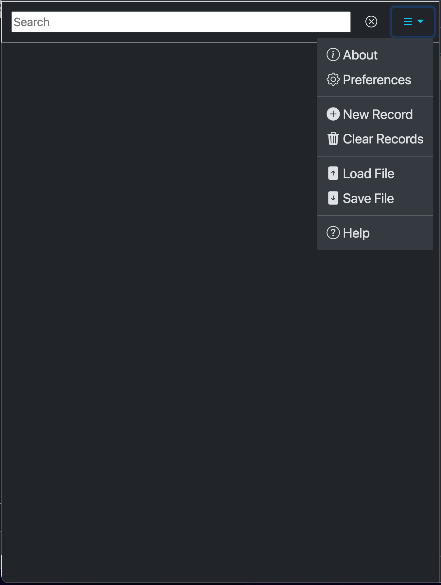
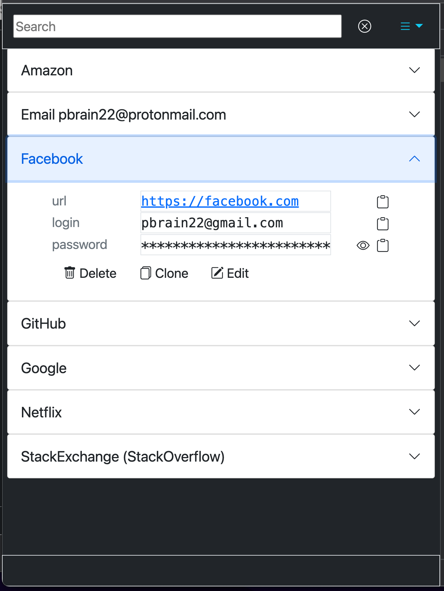

entry to see information about the app.About
WARNING! This document is not complete.
The meta data in the table is populated during the build process when the on-line help is generated.
| Field | Value |
|---|---|
| Author | Joe Linoff |
| Copyright (©) | 2022 |
| License | MIT Open Source |
| Version | 1.0.0-alpha01 |
| Build | 2022-05-26 23:19:39 -0700 |
| GitCommitId | 0e5c0db |
| GitBranch | main |
| project | https://github.com/jlinoff/pam |
| webapp | https://jlinoff.github.io/pam |
| help | https://jlinoff.github.io/pam/help/index.html |
PAM or Personal Account Manager is a free and open source single page web app that runs in your browser in a secure context that enables you to securely manage your confidential personal account data as searchable records in a secure, flexible, and persistent manner without ever having to visit a server because it stores the data in a file that you control. The file is encrypted so even if it were stolen the data would be safe if the password you used to encrypt it was strong.
You can run the application locally, from your own server or from the public github.io servers here: https://jlinoff.github.io/pam/www/index.html.
Probably the easiest way to understand how the app works is to look at some simple examples that reflect common ways to use the app.
The menu is the control center for the app. It provides the basic operations for creating records, loading records, saving them and it provide information about the app including this help.

As you can see, there are seven menu options: About
,
Preferences
, New Record
, Clear Records
, Load
File
, Save File
, and Help
.
Click or tap on the
entry to see information about the app. About
About
Click or tap on the
entry
to see the preferences dialogue which allows you to customize some of
the app behavior. There is a lot of stuff so you might want to read the
preferences section before trying it. Preferences
Preferences
Click or tap on the
entry to create a new record. New
Record
New
Record
Click or tap on the
entry to delete all of the records. This is useful for times
when you want to create a new collection of records that is saved in a
separate file. For example, if you wanted to create a collection
personal accounts in one file and a collection shared accounts for a
group of folks (like a development team sharing AWS accounts). Clear
Records
Clear
Records
Click or tap on the
entry to load a records file. You will typically have to enter
a password to decrypt the file so that the records can be displayed. Load
File
Load
File
Click or tap on the
entry to save all of the records to a file. You will want to
enter a password to make sure that the records in the file are
encrypted. Encryption is done using the AWS-CBC-256 encryption algorithm
which is known to be secure (even to quantum attacks) but it means that
you must remember it because the file records cannot be retrieved if the
password is lost. Save
File
Save
File
Click or tap on the
entry to see this help message. Help
Help
At the top of the screen is the search bar and, at the far right, the menu.
At the bottom of the screen is a status bar that shows status messages.
This example shows what the records look like. It shows seven records
that contain confidential information for Amazon
, Email
,
Facebook
, Github
, Google
, Netflix
and
Stack Exchange
fictional accounts.
The records were created by clicking on the New Record
option
from the menu and then adding the individual fields in some cases or by
clicking the Clone
option on an existing record and updating the
field values for the other cases. The Clone
operation is
particularly convenient for creating records with similar formats.
The information is all made up and has no relation to any real accounts AFAIK.

As you can see there are seven records in an accordion format in the middle of the screen. You can click on each one to expand it to make the record data visible.
To get the information for an account you click or tap the button.
At the top of the screen is the search bar and, at the far right, the menu.
At the bottom of the screen is a status bar that shows status messages.
The most common operation is expanding a record to see the
information. This example shows the fictional Facebook
account
data.

You can see that there are three fields in the record: url
,
login
and password
, next to each field there is a icon
that looks like a clipboard
 . If
you click or tap it the field contents will be copied to the clipboard
so that you can paste them into a login dialogue.
. If
you click or tap it the field contents will be copied to the clipboard
so that you can paste them into a login dialogue.
Note that the fields are completely customizable. You can have as many as you want. Fields are added, modified and deleted by the
Editoption.
In addition to the cliboard icon there is another icon that looks
like an eye  .
that shows up for password field. If you click or tap it, the password
will be shown in plaintext and the icon will change to an eye with a
slash through it
.
that shows up for password field. If you click or tap it, the password
will be shown in plaintext and the icon will change to an eye with a
slash through it
 . By
default all passwords are hidden so that they are not visible to casual
observers. Click it again to re-hide the password.
. By
default all passwords are hidden so that they are not visible to casual
observers. Click it again to re-hide the password.
In addition there are three buttons at the bottom
to delete
the record,
 Delete
Delete
to clone
the record and
 Clone
Clone
to
edit the record fields. Edit
Edit
Preferences allow you to customized the behavior of the app. The defaults are set so that most people will never have to change anything.
The preferences dialogue is a big one. It is broken into 4 sections:
Each preference is discussed in more detail in the subsections below. ##### Miscellaneous Preferences These preferences don’t fall into a single category.
These are the pre-defined record fields that are used when creating or editing records. They can be overridden.
These preferences control search options.
If enabled, all searches are case insensitive, otherwise they are case sensitive.
The default is enabled.
If enabled, all searches look at the record titles, otherwise they do not.
The default is enabled.
If enabled, all searches look at the record field names, otherwise they do not.
The default is not enabled.
You would want to enable this you wanted to see records that contained a specific field.
If enabled, all searches look at the record field values, otherwise they do not.
The default is not enabled.
You would want to enable this you wanted to see records that contained a specific field value like an obsolete email or really old password.
These preferences control automatic password creation.
Cryptic passwords consist of letters, digits and special characters
in a single string. An example would look something like this
'N5yAb!XfGa3vELPsK95K4/AAz8mts'. Cryptic passwords are very
hard to memorize for most people.
There are two types of passwords: cryptic and memorable. Memorable
passwords are composed of lower case English words with an optional
prefix, an optional separator between each word and an optional suffix.
An example would look something like this
'rebates/restructuring/jamaica'. q ###### Minimum Password
Length Defines the minimum length of generated cryptic and memorable
passwords.
The default is 12.
I would recommend not making it shorter than the default unless a website specifically demands it because shorter passwords are easier to crack.
Defines the minimum length of generated cryptic and memorable passwords.
The default is 32.
I would recommend making it longer than the default if you can but many websites have an upper bound for the length of password. The chosen default seems to work for most of them.
Defines the minimum size of a word in a generated memorable password. > It has no affect on cryptic passwords.
The default is 2.
If you do not want short words like 'as' or
'it', then make this longer. I would not recommend making
it shorter.
The string used to separate the words in a generated memorable password.
It has no affect on cryptic passwords.
The default is a single character: '/'.
If you want to change the character, add any string that you like. It
can be multiple characters. Other reasonable choices might be
':' or '.' or '@@' or whatever
you like. It is best not to use letters.
The minimum number of words in a generated memorable password.
It has no affect on cryptic passwords.
The default is 3.
The maximum number of attempts to generate a memorable password that meets the specified criteria from the other password preferences.
It has no affect on cryptic passwords.
The default is 10000.
There is normally no need to ever change this but, if you change it and make it too small, PAM will report errors if it fails to generate passwords after the maximum number of tries.
The prefix to add to all generated memorable passwords.
The default is '' (empty string).
You might want to add a prefix or suffix to make sure that the generated passwords meet the requirements of websites that require upper case letter, digits and special characters.
For example, you might specify something like 'A1!!/' to
meet the criteria which might create passwords like
'A1!!/html/wishes/combined' or
'A1!!/rebates/restructuring/jamaica'.
The suffix to add to all generated memorable passwords.
The default is '' (empty string).
You might want to add a prefix or suffix to make sure that the generated passwords meet the requirements of websites that require upper case letter, digits and special characters.
For example, you might specify something like '/A1!!' to
meet the criteria which might create passwords like
'html/wishes/combined/A1!!' or
'rebates/restructuring/jamaica/A1!!'.
These preferences don’t fall into a single category.
These are the pre-defined record fields that are used when creating or editing records. They can be overridden.
PAM, like all web applications, has security challenges. By fully disclosing them here you can understand the challenges and improve your ability to protect your record data.
Unlike many other web applications, PAM does not talk to an internet based web server which means that the data is never transported from your computer over the internet. Because no data is ever transmitted, it is protected from monster-in-the-middle (MITM) attacks.
Thus, PAM mitigates MITM attacks by design.
Because PAM does not send the data to a server, it is not vulnerable to how cybersecurity is managed on the server by a third party.
You can verify that PAM is not sending data out by monitoring outbound traffic from your system. PAM never sends any outbound data.
Instead, encryption and decryption is run inside the browser using the secure context of the browser. This is the same context used for accessing sites securely for transactions, like your bank. The security of the secure context is taken very seriously by organizations that develop Chrome, Edge, Firefox and other browsers.
You can read more about secure contexts here.
The user enters the record data in decrypted form, so it may be vulnerable to over the shoulder surfing attacks where someone or something (like a camera) watches or films the user typing or opening a record and then clicking on a password field to display the password in plaintext which could allow that information to be stolen.
This vulnerability can be mitigated by being aware of your surroundings to make sure you are not being watched or filmed.
This is different and easier to mitigate than
key-logging and screen recordingas discussed in the next subsection.
If malware that takes screenshots or does key logging has been installed on your computer, phone or tablet, you are in trouble for a variety of reasons. It means that an attacker can see what you are doing and capture what you are typing.
The best way to mitigate these forms of attacks is to keep your system up to date by installing security patches and by using some sort of security tool or tools to protect your system.
Yet another type of vulnerability is the clipboard attack
if/when data is copied to the clipboard for cut and paste operations.
This vulnerability exists because the clipboard is a global resource
that can be accessed by other, independent applications.
Clipboard attacks can be mitigated by making sure that your computer does not have malware installed or by not copying to the clipboard. Although it is probably impractical to not use the clipboard at all so, if you do use the clipboard, make sure that you always reset it after any copy/paste operation to minimize any chances that it will be captured by malware or observed by an attacker. You can reset it by simply selection a single letter or word and copying it.
Another, perhaps better, way to mitigate the clipboard vulnerability would be to eliminate the need for the clipboard by modifying PAM to automatically login in for you based on record data using an HTTP POST operation but that is not currently available.
If you leave the browser unattended after you have loaded your record data, someone can sit down and see the records because they are impersonating you after you have logged in.
The best way to mitigate this attach is to always lock your screen when you leave the computer unattended.
Web site spoofing could be used to direct you to a website that could be used to steal your information using a look alike web application.
To mitigate that make sure that you accessing the PAM from a known, trusted site.
If you are concerned about this, you can always download, build and run PAM from your own site.
The examples in this section talk about how to use this app under different scenarios.
This is the most common usage. It is where personal account records are stored so that you have a permanent, encrypted record of all of your passwords.
To create a file and a record follow these steps:
Add New Recordoption from the menu in the upper right hand corner.
Google email.
url,
loginand
password.
Save Filefrom the menu.
mystuff.pamor
joe.pamif your name is
Joe,
At this point your data is stored. You can add as many additional records as you want or change existing records. As long as you save them, they will be available to you.
To use the data to log into a site.
urllink so that the site opens up in a different tab.
To edit an existing record.
To delete an existing record.
This is a really powerful operation that allows you to quickly create records with the same fields.
To clone a record.
If you want to disable the copying of field data turn off the
Clone Field Values when Cloning Records
preference. That avoids
having to delete each old field value before typing in the new field
value.
This scenario assumes that a small group shares a common file of account records with credentials that can only be decrypted using a single shared password that is only known to the group. Because it is so easy to manage, such simple setup it might be useful for a small group that requires administrative access to a small number of accounts.
Because it involves sharing a password, this approach may be too insecure for some.
If this approach is adopted, it would be wise to change the shared password frequently, to audit all access to the shared file as well as auditing all access to the accounts. Also, since the shared file must be on a mounted volume that can be seen by the input file dialogue, access to the mount and, by extension, to the file can also be restricted.
Here are the high level steps necessary to share the pam file.
login,
password, note and host by
editing the preferences and removing the other fields since these
records have a specific format.This is a bit of contrived example because you could easily keep all of your recipes with your other personal account data but it might be useful if you want to keep them separated.
The key notion here is the idea of creating two new fields in the
preference dialogue: difficulty
, ingredients
and
steps
, and then using them when you enter recipes.
Here are the high level steps necessary to get started.
Record Fieldssection.
difficultyof type
text.
ingredientsof type
textarea.
stepsof type
textarea.
To search by an ingredient, set the Search Record Field Values
preference to true by clicking on it and then saving it.
This is another somewhat of contrived example because you could easily keep all of your book reviews with your other personal account data but it might be useful if you want to keep them separated.
For my book reviews, I enter the book title as the record title and added the following fields using the methodology described in the recipes section above.
Note that i only add records or books that i have completed.
| name | type | description |
|---|---|---|
| author | textarea | there maybe multiple authors |
| date-read | text | when i read it |
| thoughts | textarea | my thoughts about the book |
To search by author, set the Search Record Field Values
preference to true by clicking on it and then saving it.
These are things that developers might be interested in.
It was built using pure javascript and relies on a secure context to provide encryption and decryption.
It uses bootstrap-5 to make it work better in mobile browsers.
It is free and open-source (FOSS) software.
VERSION file using semantic versioning.make to propagate the new version.make app-help to propagate any changes to
HELP.md.make web to create pam-www.tar which
contains the app in pam/www. It can be used to release to a
secure (HTTPS) server. The app cannot be used on a non-secure (HTTP)
server because it requires a secure context.